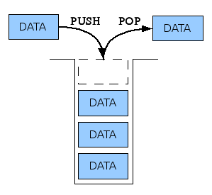

자료구조란 여러 데이터의 묶음을 저장하고 사용하는 방법을 정의한 것이다.
수많은 선배 개발자들은 무수한 상황에 데이터를 효율적으로 다룰 수 있는 여러 방법을 이미 연구해 모아두고 자료구조라 이름을 붙였다.
대부분의 자료구조는 특정한 상황에 놓인 문제를 해결하는 데에 특화되어 있다.
데이터는 문자, 숫자, 소리, 그림, 영상 등 실생활을 구성하고 있는 모든 값이다.
데이터는 필요에 따라 데이터의 특징을 파악(분석)하고 정리하여 활용해야만 의미를 가질 수 있으며 체계적으로 정리하여 저장해두는 게 데이터를 활용하는 데 있어 훨씬 유리하다.
스택은 데이터를 순서대로 쌓아 올린 형태의 자료구조이다.
스택의 특징은 입력과 출력이 하나의 방향으로 이루어지는 제한적 접근이라는 특징을 가지고 있다.
이런 Stack 자료구조의 정책을 LIFO(Last In First Out) 혹은 FILO(First In Last Out)이라고 부르기도 한다.

큐는 데이터를 순서대로 줄을 세운 형태의 자료구조이다.
큐의 특징은 먼저 들어간 데이터가 먼저 나오는 선입선출이라는 특징을 가지고 있다.
이런 큐의 자료구조의 정책을 FIFO(First In First Out) 혹은 LILO(Last In Last Out)이라고 부르기도 한다.